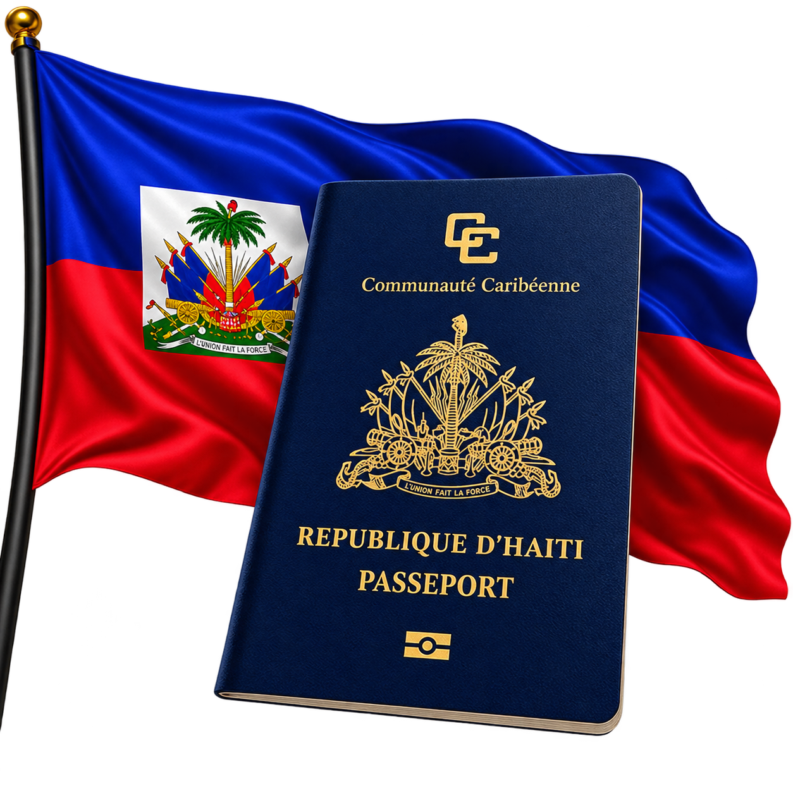

Guide de démarche
Préparer votre demande de passeport
Les principaux éléments à connaître afin d'organiser votre dossier avant de vous rendre au service compétent.
Une démarche mieux préparée
Réunissez vos pièces à l'avance et vérifiez les informations auprès de l'institution responsable. Les conditions, frais et délais peuvent évoluer.

Comment procéder ?
La demande se fait auprès de la Direction de l'Immigration et de l'Émigration (DIE). Préparez votre dossier, remplissez les formalités demandées puis présentez-vous selon les modalités communiquées.
Étapes principales
- Réunir les pièces nécessaires à votre dossier.
- Effectuer les formalités et le paiement demandés.
- Fournir les informations biométriques requises.
- Conserver votre fiche de dépôt pour le retrait.
Pièces à prévoir
- Votre matricule fiscal.
- Votre Carte d'Identification Nationale (CIN).
- Un timbre de passeport acheté auprès du service indiqué.
- Votre extrait d'archives.
- Les frais exigés pour le dépôt du dossier.